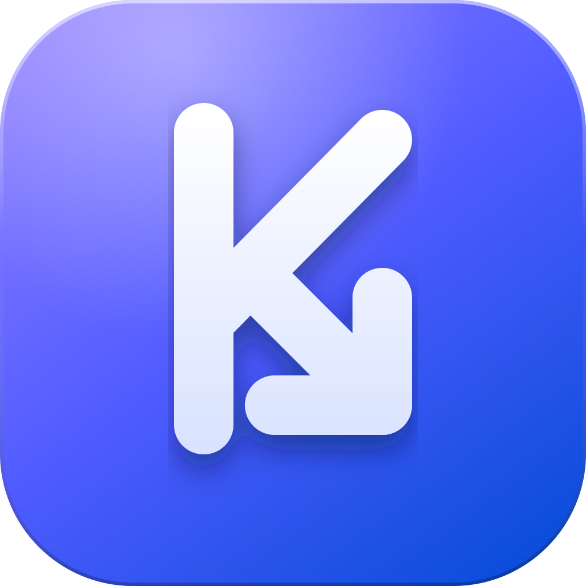

Katevazo
A clean, fast, cross-platform video downloader for Windows, macOS and Linux.
Download the appWhat it does
- Paste a link, preview the title and available qualities, then download as video (MP4) or audio (MP3).
- Pause, resume, cancel and retry any download. A queue runs several at once with live progress.
- Light, dark or system appearance, and eight interface languages.
- Powered by yt-dlp and ffmpeg, with one-click yt-dlp updates from inside the app.
Browser extension
Send to Katevazo sends the page you are viewing, or a link you right-click, to the app. It also adds download buttons on YouTube and Instagram. Nothing downloads until you press Download in the app.
It needs the Katevazo app installed. Install it from the Chrome Web Store or Edge Add-ons, or from the Browser extension section in the app's Settings.